гуляли по районам Shoredith и Islington :)
Решили делать фотки на свежевыданную гуглом лопату-телефон.
[тут была дурацкая шутка, которая расстроила некоторых, так что больше её тут нету :)] … короче, недолюбливаю я эту телефоно-лопату.
Поэтому вам повезло: почти все фотки делал СергейАнатольич. :) У него характер получше, соответственно и фотки менее промзонные. (Курсив СергейАнатольича.)
Хамелеона я всё-таки не могла не сфоткать (с колосящейся травой на мосту и аккуратным мусорком в углу):
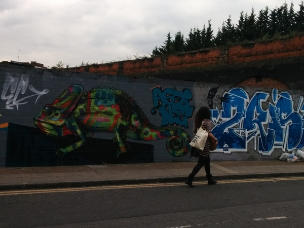
Кстати, я люблю, когда на фотке люди. А они этого, как несложно догадаться, не любят. ;)
Мы решили уйти подальше от центра. Пошли примерно на север (точнее, это я считаю, что там север, а телефон-лопата думает по-другому). СергейАнатольич зафоткал очень красивое место:
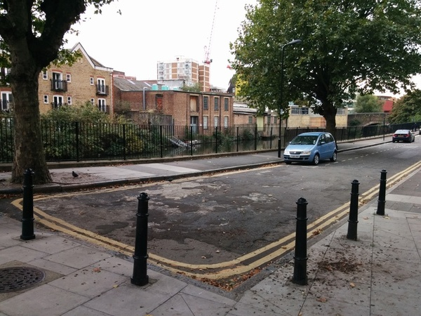
Ну и я так и быть сделала там же фотку (кстати, на ней видна прекрасная и очень характерная кора дерева):
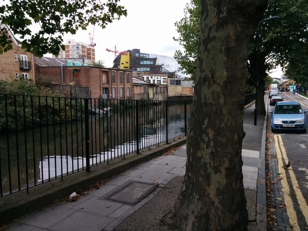
Остановка и человек на велике. Местность, в целом, не характерная для Лондона — больше похоже на небольшой белорусский город, разрезанный трассой M1. (Куст справа отчаянно прикидывается деревом)
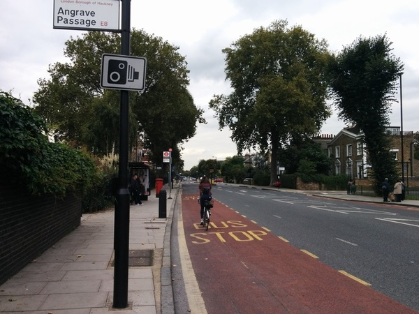
Перекрёсток. Не слишком ли мало светофоров для такого пятака. :D
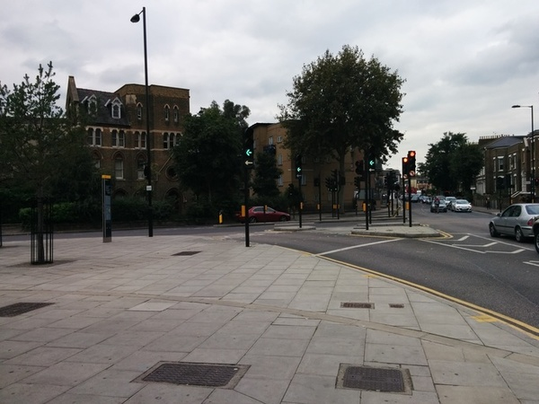
А вот это — железнодорожные пути (или ещё какие-то). Так они обычно и идут, в яме за высоким кирпичным забором и зарослями.
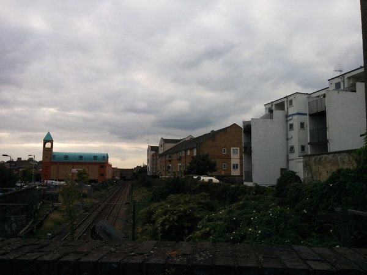
Это местные каштаны. Почему-то они колючие (повышенной колючести) и растут на клёнах, а изнутри напоминают лесной орех. :)
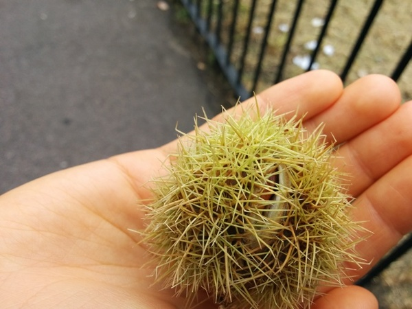
Ещё одно красивое место.
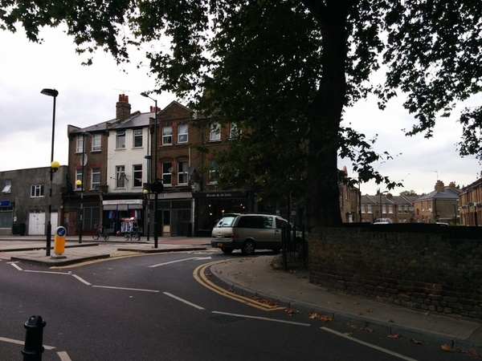
Малый сквер там же. Опять видна характерная кора дерева.
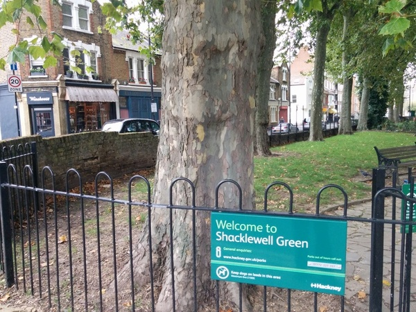
Тут видно, что сквер действительно малый. :D
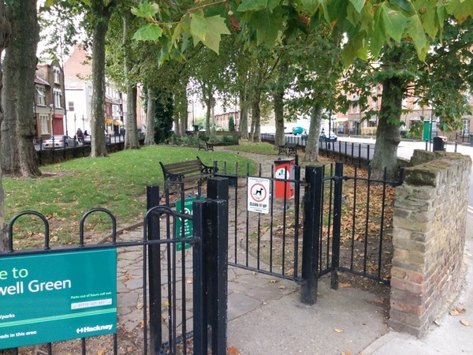
Вот это — типичная для меня фотка. Если б не СергейАнатольич, все фотки были бы примерно в таком духе. :D (туда мы не пошли, это заулок одной из больших дорог)
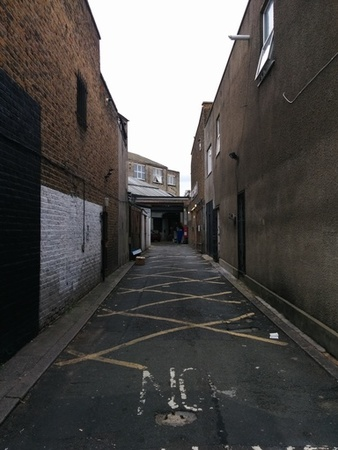
Идём дальше. (черная туча слева — непростое геометеоявление — случайно влезший палец фотографа)
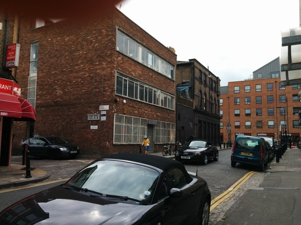
Красивая дорога. На противоположной стороне — скопление лавок, о котором я говорила. Но самый классный, конечно, человек на велике. (поворот на 90 градусов от направления заулка)
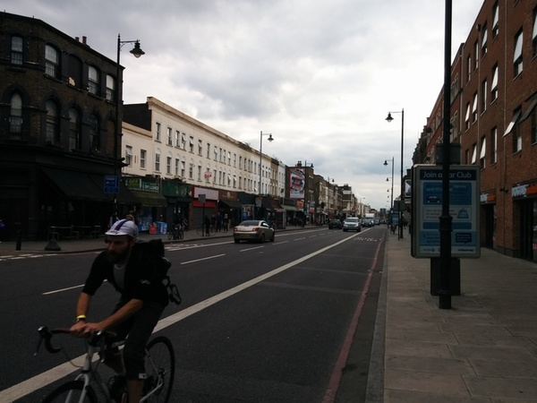
Роза. На спальных улицах возле многих домов растут цветы, часто розы. Эта была особенно красивая. Когда я её фоткала, из дому вышла женщина и удивилась (надеюсь, обрадовалась), что я фоткала её розу. :)
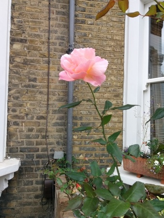
Одно из приятнейших мест. Не тюрьма, а школа. :D
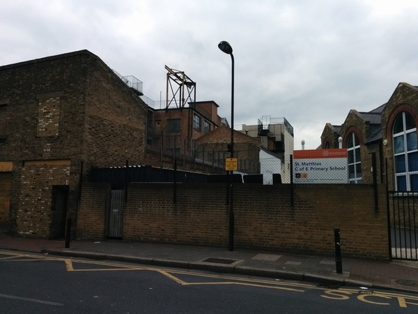
Нечасто встретишь тут зелёный район. Но большинство деревьев большие и основательные, как у Толкиена. Это — один из (как я понимаю) крайне буржуйских спальных районов.
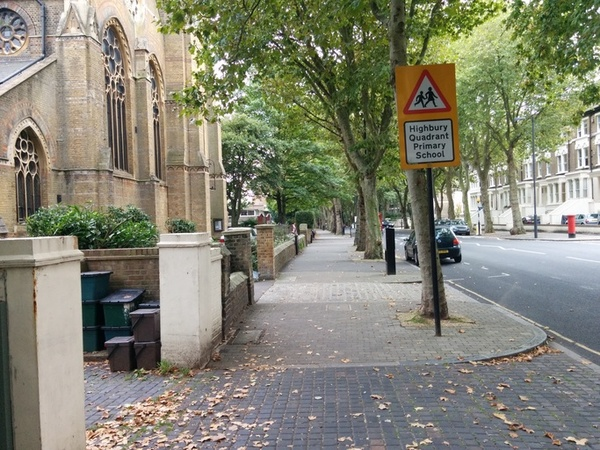
И вся улица такая. (Слева не часовня, а особняк. Перед половиной таких на улице стоит табличка “to let” — “сдается”.)
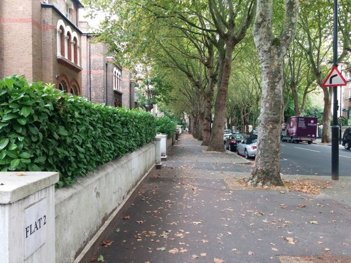
Очень классное место. На фотке не видно, но на дереве огоньки.
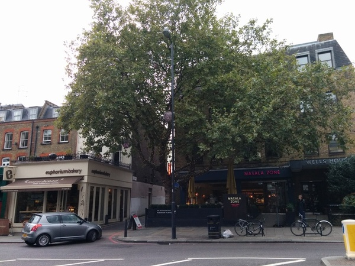
Один из типичнейших нижних этажей домов (а вовсе не странноо вида подвал, как вы могли подумать ;).
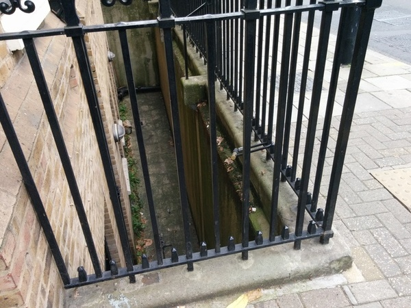
Острые углы — это, видимо, нормально тут у них. Часто встречается сочетание рыжего/коричневого с синим/голубым.
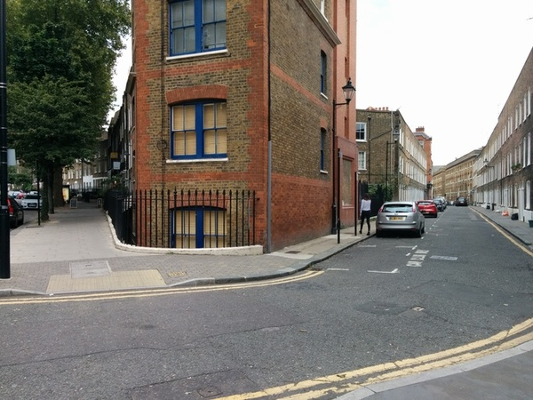
СергейАнатольич наконец-то запечатлел горы мусора. Он назвает эту фотку “артхаусной” :D
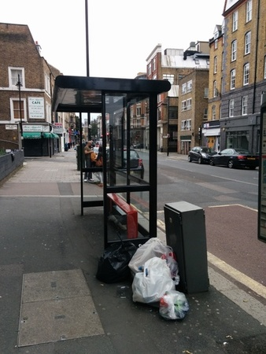
Одна из лучших фоток, СергейАнатольич сделал! Тут тебе и свалка, и молодой азиат, и полиция, и всё это образует какой-то любовный треуольник. (Перекрёсток, типа “центр” улицы)
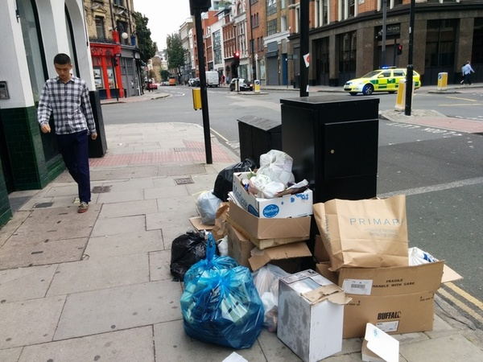
СергейАнатольич (как и я) неравнодушен к огонькам и фонарям. На фотках плохо получается, но всё равно красиво. (Вопрос пытливому зрителю, что заставило велосипедиста справа ТАК скукожиться?)
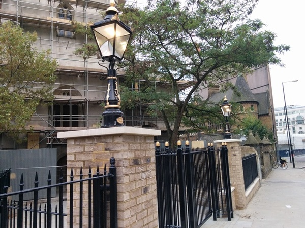
Местная речушка. ;) Если присмотреться, крайнее правое здание с башней и краном на противоположной стороне — художественная галарея, скорее всего. Во всяком случае там написано “MALEVICH” (если приблизить, то надпись видна). (Слева видны 3 моста: пешеходный, london bridge и tower bridge.)
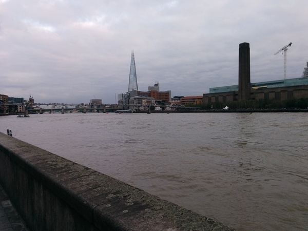
В некоторых местах из неба торчат рога.
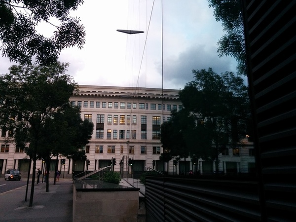
Это уже на подходе к нашему гатэлю.
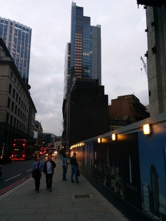
Идём домой. Сумерки.
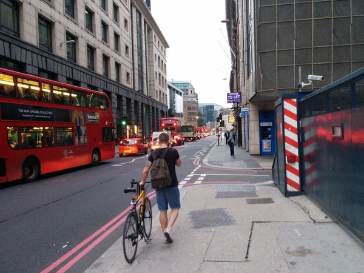
Вот так. :)
comments powered by Disqus